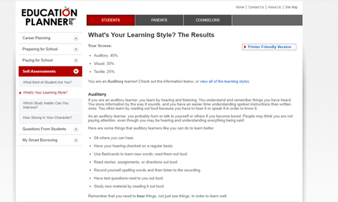
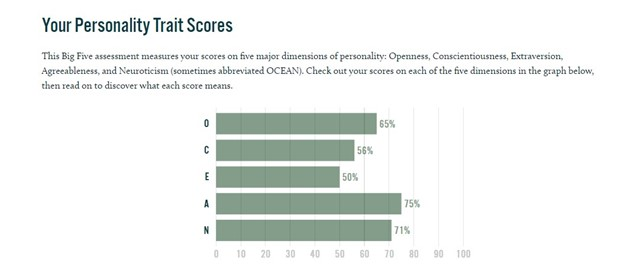

(Web designer of LVMN team)
Vung Tau, one of Vietnam's most beautiful cities, is where I was born and raised. I've always had a significant interest in electronic equipment, and Mark Zuckerberg was the one who first pushed me to pursue a career in the information technology field. I appreciate his accomplishments and have decided to pursue this as my major at RMIT.
My name is Du Tuan Vu (s3924489), and I'm now working as a web designer with the LVMN team on a project. This perspective appeals to me, as does anything linked to art, including design. As a result, I am passionate about a variety of topics, including guitar and singing. Basketball is another activity that I like playing with my pals. To be honest, I don't have a lot of expertise or understanding in this field. So everything appears to be difficult, but I always give it my all because once I conquer it, I am ecstatic.
Personally, I feel that these reviews represent the real me. I'm a rather quiet person, maybe that's why I don't talk much or make many friends. Fortunately, people still understand my warmth and come to me. What worries me the most is that I always feel pessimistic, maybe because I'm an introvert who doesn't often get out of my comfort zone and experience new things. That scares me and tends to do nothing. In addition, I am a person who tends to help others, which means I am willing to give up what I am doing to do other people's business. Maybe I'm the kind of person who just needs to see the person I help happy to make me happy. So that affects my behavior a lot. I am often used by people to do things to satisfy themselves, just a few painful stories can soften my heart, so I am taken advantage of quite a lot. That makes me feel afraid of the world.
Whenever I don't know what to do, I often listen to music and go for a run because it solves the pain in my soul, makes me forget about the present. When looking for team members, for people I know, it's really easy because I understand their personalities. I know each person's strengths and divide the work as reasonably as possible. But when I have to pair up with strangers, I'm quite nervous because I don't know the types of people I will have to interact with, whether they are hard-working, sociable, or responsible at work. Those are the things that worry me.
Appealing about position
-What excites me about this position is that it requires me to take on many roles such as client communication, project management, and customer requirements analysis. That way I can both use my strengths of good communication skills, as well as being a team leader to assign tasks to the members. I know it's hard, but maybe I can learn those skills while studying at RMIT. In addition to this position, I also have the opportunity to attend a free Japanese language class with full allowance and also work with Japanese customers. It's something I've always dreamed of because I love their culture so much. And there are many other attractive benefits that make me unable to hesitate to join this position of the company.
-This isn't my ideal position. As I previously stated, my ambition is to build a virtual community and perhaps work with gaming companies or Facebook. But doing those things isn't simple, so first and foremost, I need to find a steady position where I can get experience and grow. So that, I would be able to achieve big things, such as my dreams.
I now have a better understanding of my skills and shortcomings as a result of this assignment. My strength, as I proved at ASM1, is bringing people together, becoming close, and communicating in a shared language. The aspect of this section that I find the most challenging is that I have to learn a programming language rapidly and without any preparatory time. I'm the one on the team that takes on the most work, but I'm not bothered by it. As a result, I've discovered what I want and need in a team. They were incredibly friendly to me and shared everything with me. I'm grateful to be part of a fantastic team with whom I never disagree. We've spoken about how to attain our long-term objectives.